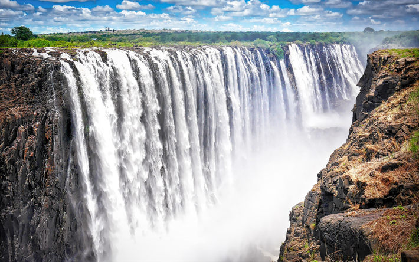
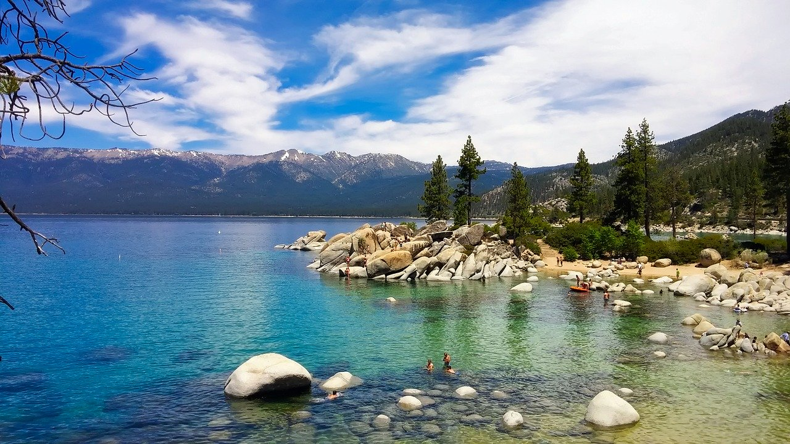
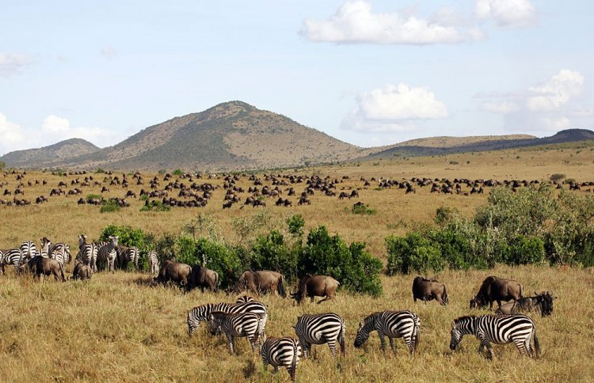

Africa

Africa is a continent rich in its cultures,diversity and history.Africa is one of the worlds important tourism destinations as
has attractive and enjoyable natural resources from parks,forests,waterfalls and among the most popular tourist sites on the continent
the Masai Mara Reserve in Kenya and the pyramids of Egypt and the city of Djinni,Mali.Let us take some the tourist sites,for example:
1.The pyramids

There are three Egyptian pyramids in Giza Khufu, Khafre, and Menkaure.The largest is the pyramid of Khufu, also called
the Great Pyramid of Giza.The Great Pyramid of Giza is the largest of all Seven Wonders of the Ancient World.the city of Cairo,Egypt.
The Giza pyramid are considered the most important an archaeological and tourist attractions in Egypt, so we should visit them to know
history and civilization of our country.The interior walls of these pyramids are decorated with drawings that bring pleasure to the
spirit of the king after its return.
2.Victoria Falls

Victoria Falls is a waterfall on the Zambezi River in southern Africa, which provides habitat for several unique species of plants and animals. It is located on the border
between Zambia and Zimbabwe and is one of the worlds largest waterfalls.One special vantage point is across the Knife-edge Bridge, where visitors can have the finest view of the Eastern
Cataract and the Main Falls as well as the Boiling Pot.Archeological sites and oral history describe a long record of African knowledge of the site.Zambia and Zimbabwe both have national
parks and tourism infrastructure at the site.
3.Table Mountain

Table Mountain is a flat-topped mountain forming a prominent landmark overlooking the city of Cape Town in South Africa.It is a significant tourist attraction,with many
visitors using the cableway or hiking to the top.Table Mountain National Park is the most visited national park in South Africa.It forms part of the Table Mountain National Park,and part of
the lands formerly ranged by Khoe-speaking clans.It is home to a large array of mostly endemic fauna and flora.The mountain has 8,200 plant species, of which around 80% are
fynbos, meaning fine bush.
4.Cape Town

Cape Town is one of South Africais three capital cities,serving as the seat of the parliament of South Africa.It is the legislative capital of the country and the second largest
(after Johannesburg).The city is known for its harbour,for its natural setting in the Cape Floristic Region,and for landmarks such as Table Mountain and Cap Point.The city has a long coastline
on the Atlantic Ocean.Colloquially named the Mother City,it is the largest city of the Western Cape province,and is managed by the City of Cape Town metropolitan municipality.
5.Lake Malawi

Lake Malawi is a lake in Africa.It is the southernmost lake in the East African Rift system.Before Malawi became independent in 1964,the territory was called Nyasland.
Lake Malawi is home to more species of fish than any other lake in the world.Lake Malawi is called a meromicticlake,meaning that its water layers do not mix.It is the fifth largest
fresh water lake in the world by volume, the ninth largest lake in the world by area—and the third largest and second deepest lake in Africa. Lake Malawi is home to more species of
fish than any other lake in the world,including at least 700 species of cichlids.
6.Masai Mara

Masai Mara National Reserve is a National Park in Kenya, East Africa. It was established in 1948 as a wildlife sanctuary,and has been larger since then.Masai Mara is
a game reserve type of park, meant to protect the animals on the savannah of the Serengeti. It is named after the Maasi people, who are the traditional people of the area.Big as it
is, the Masai Mara National Reserve is only a fraction of the Greater Mara Ecosystem.The Mara is effectively the northern continuation of the Serengeti National Park game reserve
in Tanzania.This natural event is famous for involving a great population of large mammals.